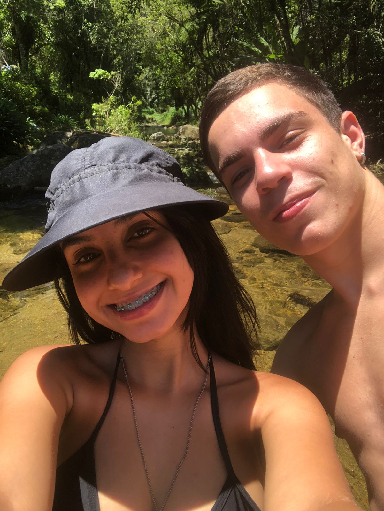
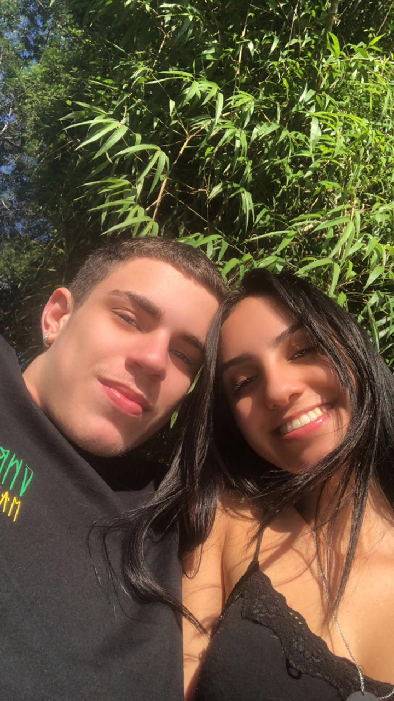
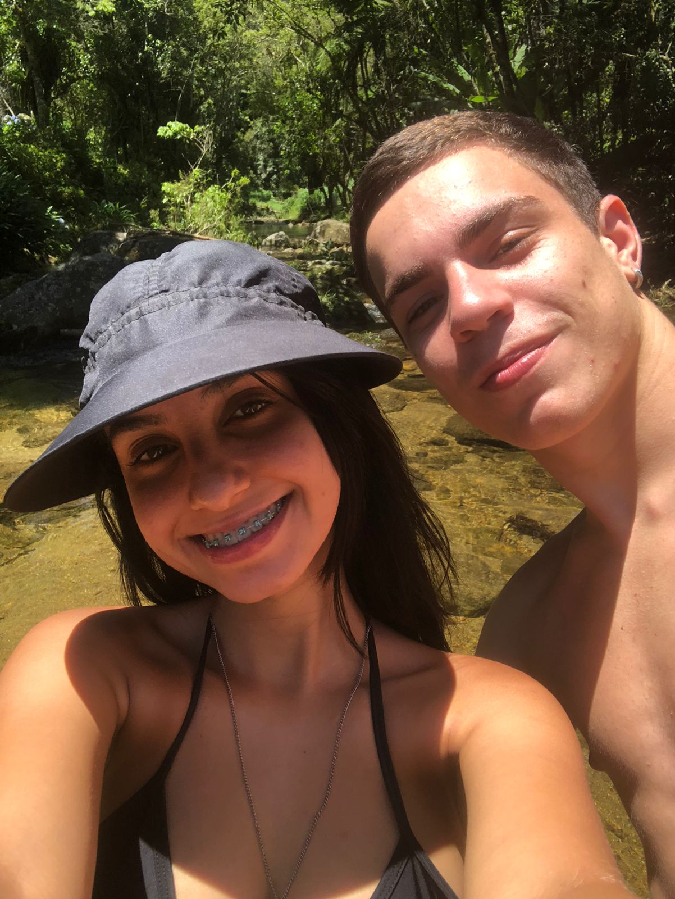
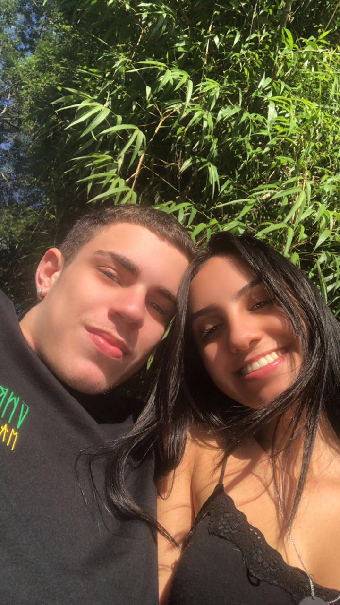
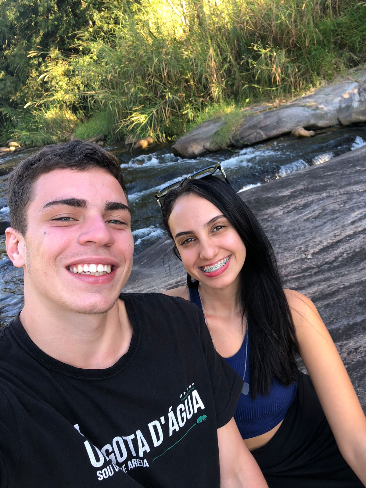
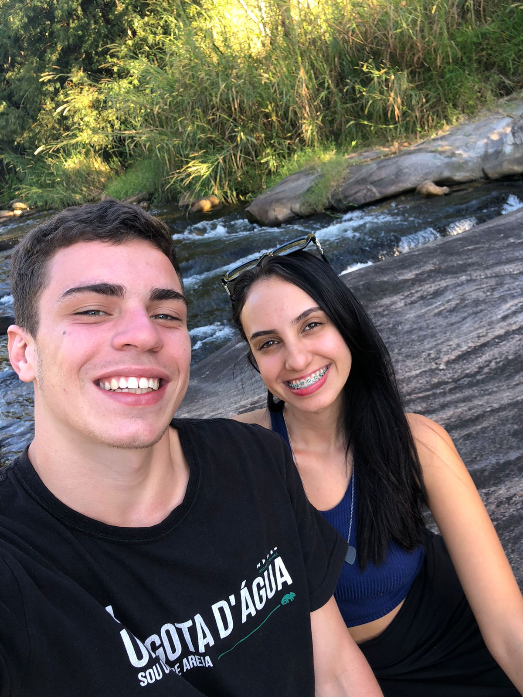
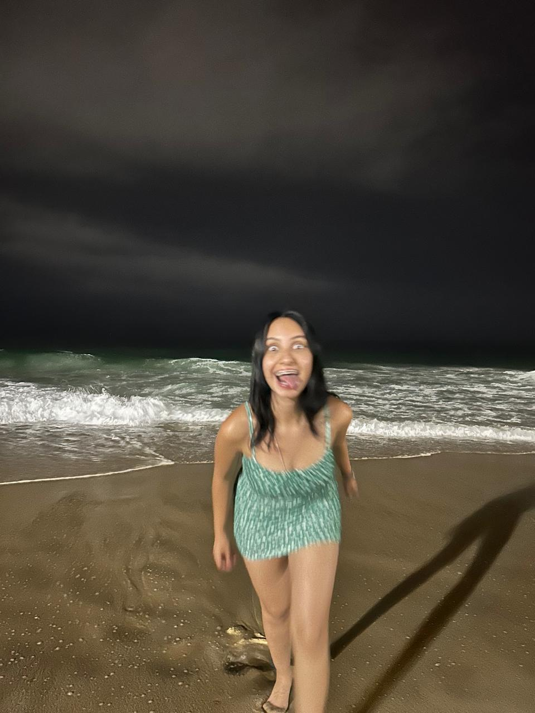
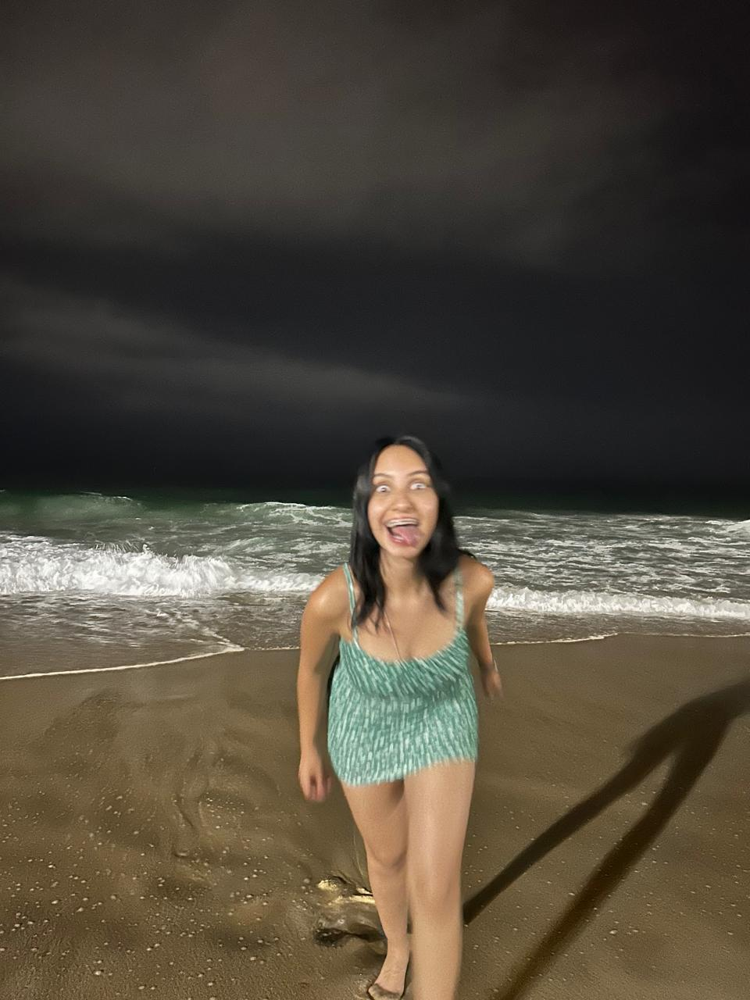

Nossa História
Uma carta para o Amor da Minha Vida ü•∞
Hoje completamos dois anos de namoro, e tenho certeza que são os primeiros dois anos de uma vida toda. Tudo passou tão rápido, parece que foi ontem que nós estávamos ansiosos para ver um ao outro no nosso primeiro encontro, lembro que naquele dia eu estava inquieto, fazendo qualquer coisa pro tempo passar logo, eu não conseguia acreditar que eu tinha tido coragem de me "declarar" e contar que eu queria você, a ficha de que o que eu tanto sonhava estava pra acontecer ainda não tinha caído.
Sempre fui apaixonado por você, desde o 7º ano quando nós caímos juntos no mapeamento, naquela sala de frente pra creche, foi nesse ano que o fogo dentro de mim realmente começou (a famosa quedinha), e infelizmente a vergonha sempre foi mais forte, sempre fez eu ter medo de "me declarar" pra você e acabar não dando certo, eu ficava pensando o que faria caso não desse certo, aonde eu ia enfiar a cara??? Mas enfim, o tempo foi passando, você começou a namorar e sinceramente eu já tinha desistido de tentar algum dia, sempre preferi aceitar que éramos apenas amigos.
O tempo passou, você terminou e nos reaproximamos de novo (não lembro se nos reaproximamos depois do primeiro ou do segundo término) e aquela quedinha que eu já não sentia há tempo, estava voltando, porém, como sempre, o bobão aqui nunca teve coragem de falar ou tentar algo, tudo por medo de dar errado e acabar perdendo a amizade, pois era a amizade que eu mais valorizava, e ainda é né, obviamente.
Lembro que naquele dia da formatura eu tava MALUCO pra ficar com você, ficava olhando você falar, falar e falar (como sempre) e eu só desejando ter coragem pra falar com você pra gente ficar, e outra coisa que atrapalhou também, foi que eu já tinha vacilado com a Luana uma vez e você tinha falado pra cacete na minha cabeça, aquele negócio lá tinha realmente me deixado muito triste, enfim, foi outro motivo pra eu não ter pedido pra ficar com você naquele dia.
Dias depois, chegou o dia da virada do ano e GRAÇAS A DEUS você não foi pra Ubatuba, sinceramente acho que se a gente não tivesse se beijado naquela noite, ficaria mais difícil pra eu tomar coragem de falar com você, e na verdade, não tomei coragem mesmo KKKK.
Lembro que uma certa noite, já não estava dormindo legal, pois não sabia se aquele beijo bêbado da virada tinha sido real ou não, pensei na estratégia de mandar um snap, dizendo algo que não lembro exatamente o que era, mas era algo como: "sofrendo por mulher", algo assim, não lembro mesmo, mas eu lembro que eu SABIA que você ia responder perguntando sobre, e eu já tava planejando que eu ia falar que era por você, lembro que na hora que você perguntou, eu me tremi todo, e pensei em não mandar e mudar o assunto mas pensei "quer saber? fodase, vou mandar e ver o que acontece", criei coragem e respondi você.
Lembro que você respondeu meu snap com um "Luana" e eu respondi, "não, você", e você ficou meio confusa, não sei exatamente o que passou pela sua cabeça né, obviamente, mas você não entendeu de primeira, aí expliquei e falei o que tava engasgado e acumulado desde o 7º ano, e a partir deste dia, comecei a ser o homem mais feliz do mundo, não sei porque, mas tinha algo dentro de mim que me convencia e tranquilizava, dizendo que eu tinha encontrado a mulher da minha vida e que realmente daria certo.
Eu já falei isso pra você, desde o início eu sempre soube que daria certo, e meu Deus, a gente deu MUITO certo, mesmo com todas as brigas e desentendimentos, nós demos muito certo, enfim, escrevi isso tudo, porque sei que você ama quando falo da gente e da minha visão de como foi.
Obrigado por ter sido a melhor namorada do mundo nesses dois anos que estamos juntos, sério, sou completamente apaixonado e grato por tudo que você fez por mim. Eu te amo, Vitória Fraga Raimundo! Pra mim você é a mulher mais linda desse mundo.
Sou apaixonado nesse sorriso maravilhoso, nesses olhos lindos (principalmente quando estão na luz do sol), amo seu cabelo, seu nariz, sua boca, seu pezinho enrugado, suas orelhinhas miudinhas, seu pescocinho delicioso, sua barriguinha gostosa, seu jeito meigo e fofo, suas brincadeiras, sua risada, seu companheirismo, seu senso de humor, sua animação, seus gostos musicais, seus gostos pessoais no geral, TUDO, sou apaixonado por TUDO em você, e tudo isso que eu falei, junto com todos os mínimos detalhes, são o que fizeram e ainda fazem eu me apaixonar por você cada vez mais, dia após dia, essa paixão só aumenta, eu amo estar com você, eu amo viver você, Vitória. Tenho certeza de que é com essa morena que eu quero passar o resto da minha vida junto.
Se Deus quiser, vamos conseguir construir tudo o que desejamos, meu amor, uma casa linda de apenas um andar, com um muro alto, uma piscina pequena, um jardim atrás e um bom gramado pra gente brincar com a Ana Lua e com o Cauan. Espero de coração que possamos dividir isso juntos, e torço muito para que dê tudo certo, se depender do amor, estamos feitos.
Hoje nós completamos 2 anos juntos, mas logo menos será 10, depois 20, depois 30 e assim por diante... E aí, não serão anos de namoro, serão de CASADOSS, MEU DEUS QUE SONHO, fico muito ansioso por isso, e espero do fundo do meu coração que consigamos construir isso junto.. Na verdade, já estamos construindo e se Deus quiser vai dar tudo certo.
Como você sabe, não sou bom com palavras, mas eu só quero que você saiba que eu te amo demais, nunca amei alguém assim e tenho certeza que nunca vou amar. Sou completamente apaixonado por você , e meu maior sonho é viver com você pro resto da vida, independente de qualquer coisa, eu só quero ser feliz ao seu lado, e principalmente fazer você feliz, afinal, a sua felicidade é o que me deixa feliz e o que me motiva.
E é isso, meu amor. Escrevi tudo isso com o coração, pensando em cada momento que a gente viveu e em tudo que ainda vamos viver.
Obrigada por ser meu porto seguro, minha risada favorita, minha melhor amiga, minha gata linda que eu tenho orgulho de chamar de namorada, e todas as outras coisas que você é pra mim. Que venham muitos e muitos anos ao seu lado, e que a gente continue crescendo, amadurecendo e sonhando juntos. Que mesmo com os altos e baixos da vida e de um relacionamento, o nosso amor sempre continue firme e forte.
Te amo mais do que eu consigo escrever aqui, Vitória. Você é o maior presente que Deus já me deu.
Com todo amor do mundo, do seu namorado, melhor amigo e futuro marido,
Marcelo, vulgo momozi.
 



 

 
